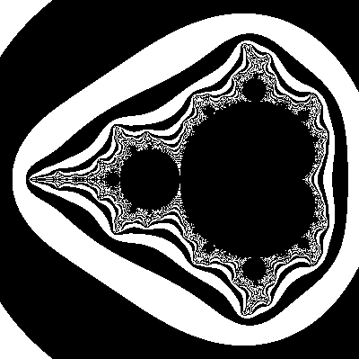
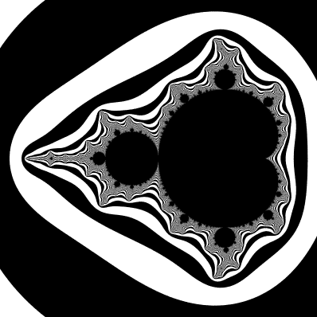

Day13 - Rusty Mandelbrot
Executing Rust Code in the Browser
2019-02-19
Today I decided to lay some groundwork for future projects. I hope in the future have more interactive content in these daily posts in order to demonstrate the concepts more effectively. These days running code in the browser is much easier than it has been historically. The advent of WebAssembly has opened doors that previously have been closed. Running anything from the simplest lua script to the the most complex of Rust or c++ code can now be done in the browser.
With that in mind, I decided to build a simple demo of compiling a library in WebAssembly to be used in the browser. To make this as easy as possible I used Parcel which is the new darling bundler in the JavaScript community. Parcel promises zero configuration bundling, but as you will see shortly, this isn't really true if you stray from the happy path.
The demo I built was a simple Mandelbrot viewer:
The actual complex number calculations are done in rust compiled to a WebAssembly module which gets automatically imported and initialized by the Parcel runtime. I will describe the steps to get to this point.
Dependencies
Tools that need installed:
Once they are installed, I started a new project with parcel by creating a folder, and adding an index.rs file:
#[no_mangle] pub fn mandle() -> i32 { 42 }
Any function that you intend to expose to the outside world must
have the no_mangle attribute in order to tell the Rust compiler not to
optimize this function away.
To access the file, I created a simple index.js file:
import { mandle } from './index.rs'; console.log(mandle());
And lastly a scaffold in an index.html file to actually see something:
<html> <body> <script src="./index.js"></script> </body> </html>
Then bundling and compiling is really as simple as running parcel index.html
in your favorite shell.
Server running at http://localhost:1234 √ Built in 722ms.
Going to the reported URL will open a blank page, but the dev console should show 42.
Why WebAssembly
Lets get something on the screen shall we? The Mandelbrot fractal is a fascinating quirk of polynomial multiplication which appears when you plot the time it takes for the function Z = Z * Z + C to diverge to infinity over various points (C) on the complex plane. This will make more sense shortly but first a note on why to use compiled languages in the browser.
Most of the excitement I have seen around WebAssembly centers around the possibility of significant performance gain when using it. Although this may be true, the thing that excites me is the possibility of using more expressive, and safe languages. I find JavaScript very valuable for quick and dirty projects, but when projects get more complicated than a few thousand lines long, I find myself relying more and more on the type system of my favorite languages to keep me sane.
And even beyond that, most of the languages I reach for have significant tools for building DSL's or domain specific languages within the syntax of the language. An extremely simplified version of DSL design can be achieved through operator overloading.
Back to the original goal; the Mandelbrot fractal is much easier to render if we can use a simple arithmetic DSL for adding and multiplying complex numbers. We don't need much, but it is very useful to abstract away the complexities of the algebra and write the code for the actual Mandelbrot function (Z = Z * Z + C) directly. First lets define our algebra.
Complex Numbers
Complex Numbers is a scary name for a relatively simple concept. The idea is to invent a new number defined as the square root of -1. Clearly no such number really exists, but if you can imagine it existing, some interesting features would arise.
-
Since the square root of any number n multiplied by itself equals n, multiplying our imaginary number (hence forth i) by itself will get you -1.
-
Since we don't really know how to factor i, the smallest simplification we can do with a multiple of i is leave it alone.
Hang in there, we are almost to the good part. A complex number is defined as a
group of two numbers. A normal number like what we are used to, and some
multiple of our imaginary number i. Given point number 2, we can't really do
anything fancy with the i part to combine it with the normal number, so we have
to keep them separate. Mathematicians call the normal number the real component
and the multiple of i the imaginary component
So any complex number has two parts, a real part which can be any real number,
and an imaginary part which is some multiple of i. The last thing we can know
before we get pretty pictures is that we can add and multiply complex numbers
together.
Adding and multiplying is identical to adding and multiplying to binomials
together except instead of having an x squared and y squared stick around, we
can simplify the resulting expression using rule number 1 above. For example if
we have two complex numbers (a + bi) and (c + di) we can add them together
to get (a + c) as the real component and (b + d)i for the imaginary
component.
To multiply the above components, its similar but we must apply the "foil" multiplication of binomials:
First: a * c +
Outer: a * di +
Inner: bi * c +
Last: bi * di
Notice that the first and last products simplify down to real numbers. Trivially
with the first, and with last the i's multiply together to give us -1. So the
real component of multiplying the two complex numbers together is equal to
a * c - b * d. And just as before since we can't factor the i out of the Outer
and Inner parts, the imaginary component becomes a * di + c * bi.
Lets build this in Rust.
Rust Operator Overloading
The Complex struct is very simple, composed of two 64 bit floats.
#[derive(PartialEq, Copy, Clone)] pub struct Complex { pub real: f64, pub imaginary: f64 }
Importantly I derive the implementations of Clone and Copy to give the final objects copy semantics. This means that any time the variable is passed around, the struct is copied instead of borrowed.
In rust operators are overloaded for a given struct by implementing the traits
found in std::ops. In our case we only need Add and Mul.
impl Add for Complex { type Output = Complex; fn add(self, rhs: Complex) -> Complex { Complex { real: self.real + rhs.real, imaginary: self.imaginary + rhs.imaginary } } } impl Mul for Complex { type Output = Complex; fn mul(self, rhs: Complex) -> Complex { Complex { real: self.real * rhs.real - self.imaginary * rhs.imaginary, imaginary: self.real * rhs.imaginary + self.imaginary * rhs.real } } }
These mirror the above calculations exactly. Note the type parameter Output
which tells the Rust compiler that these operators should return Complex
instances.
Lastly finding the length of a complex number is useful when trying to decide if a given point is escaping to infinity. We define the length as the Cartesian distance from the origin of the complex plane. Simply put, it is the square root of the real component squared plus the imaginary component squared. For our purposes, a simple optimization can be made by not actually taking the square root in the length calculation.
impl Complex { pub fn length_squared(self) -> f64 { self.real * self.real + self.imaginary * self.imaginary } }
Using the DSL
To draw something to the screen, we will split the calculation into two parts: the complex arithmetic in Rust and interpreting the results in JavaScript. Since we don't want the JavaScript side to have to worry about the complex numbers at all, I decided to do the viewport transform on the Rust side. So the mandle function would take an x and y coordinate which moves from the top left corner to the bottom right row by row, and a width and height value. Then the Rust code transforms those values to fit a roughly 3 by 3 unit square centered slightly left of the origin. This gives a satisfying full view of the Mandelbrot fractal.
#[no_mangle] pub fn mandle(x: f64, y: f64, width: usize, height: usize) -> i32 { let c = Complex { real: x * 3.0 / (width as f64) - 2.25, imaginary: y * 3.0 / (height as f64) - 1.5 }; iterate(c, c, 0) }
Finally iterate is defined as a recursive function that repeatedly applies the
function Z = Z * Z + C to the initial state of C transformed from the
JavaScript side's coordinates. The function stops and reports how many loops it
made if either the length of Z becomes greeted than 4 (16 in our case since we
don't square root the length) or we do n iterations without escaping.
fn iterate(z: Complex, c: Complex, n: i32) -> i32 { if n >= 100 { return n; } if z.length_squared() > 16.0 { return n; } iterate(z * z + c, c, n + 1) }
And thats it for the math. You made it.
Draw Something Already
Now to see something on the screen. First we need something to draw on, so I added a canvas to the html page and initialized a 2d drawing context.
const canvas = document.getElementById('canvas'); const ctx = canvas.getContext('2d');
I also define a button for future use to redraw the Mandelbrot.
<html> <body> <script src="./index.js"></script> <canvas id="canvas" width="400" height="400"></canvas> <button onclick="draw()">Redraw</button> </body> </html>
Then I define a draw function which calls mandle for each pixel and draws a single pixel wide and tall rectangle with the results. For color I simply use whether the result is even or odd. This is a quick way to get an interesting image, but there is much more that could be done to add color. For now this is good enough.
const width = 400; const height = 400; function draw() { for (let y = 0; y < height; y += 1) { for (let x = 0; x < width; x += 1) { let n = mandle(x, y, width, height); let color = n % 2 == 0 ? "black" : "white"; ctx.fillStyle = color; ctx.fillRect(x, y, 1, 1); } } } draw(); window.draw = draw;
Refreshing the browser window presents us with:

Improvements
This is awesome, but we can do better. The draw button doesn't work because the browser is too busy calculating everything to return control to the renderer. Similarly, things look pretty pixelated. The color choices don't help, but a little bit of anti aliasing goes a long way with Mandelbrot fractals. Lets fix that first.
const samplesPerPixel = 100; function draw() { let i = 0; for (let y = 0; y < height; y += 1) { for (let x = 0; x < width; x += 1) { let c = 0; for (let s = 0; s < samplesPerPixel; s++) { let n = mandle(x + Math.random(), y + Math.random(), width, height); c += n % 2; } let gray = Math.floor(c * 255 / samplesPerPixel); ctx.fillStyle = "rgb(" + gray + ", " + gray + ", " + gray + ")"; ctx.fillRect(x, y, 1, 1); } } }
The basic idea is instead of using one sample of the complex plane per pixel, we can randomly select a bunch of samples and average the results together. Experimentally I found that 100 samples is a pretty good compromise. In practice, the majority of the time spent in our Mandelbrot renderer currently is taken up crossing the barrier between Rust and JavaScript, so doing more calculation on the Rust side doesn't actually make the render much slower.

MUCH better. Now for the other piece. It would be awesome if we could see the image draw as it goes. To handle this, I decided to use some modern JavaScript features and build an async version of sleep.
function sleep() { return new Promise(resolve => setTimeout(resolve)); }
And convert our draw function to be async, and every chunk of about 1000 pixels, yield to the browser so that it can draw to the screen.
async function draw() { let i = 0; for (let y = 0; y < height; y += 1) { for (let x = 0; x < width; x += 1) { let c = 0; for (let s = 0; s < samplesPerPixel; s++) { let n = mandle(x + Math.random(), y + Math.random(), width, height); c += n % 2; } let gray = Math.floor(c * 255 / samplesPerPixel); ctx.fillStyle = "rgb(" + gray + ", " + gray + ", " + gray + ")"; ctx.fillRect(x, y, 1, 1); i++; if (i > chunkSize) { i = 0; await sleep(); } } } }
In a normal build system, this would work and everything would be roses. Unfortunately there is an outstanding bug in the Parcel Bundler which over utilizes the Babel transpiler. So instead of our beautiful Mandelbrot fractal we are presented with a blank page and this error in the log:
index.js:15 Uncaught (in promise) ReferenceError: regeneratorRuntime is not defined at _draw (index.js:15) at draw (index.js:15) at Object.parcelRequire.index.js../SkyLight.rs (index.js:39) at newRequire (SkyLight.e31bb0bc.js:49) at localRequire (SkyLight.e31bb0bc.js:55) at index.js:41
Helping Parcel Along
After some searching on the web I found that the quickest fix was to lean in, and provide the translator what it wants. I did this by installing some babel dependencies using:
yarn add babel-plugin-transform-runtime babel-core -D
As well as adding a .babelrc file with:
{ "plugins": [ ["transform-runtime", { "polyfill": false, "regenerator": true }] ] }
And lastly adding this to the top of the JavaScript file to initialize it all:
import "babel-polyfill";
Unfortunately I have found errors such as these to be pretty common when pushing the edges of what Parcel supports. I am hopeful that these things will get simpler over time, but for now fixes like the above work well enough.
A final refresh gives us the demo I have embedded at the top of this post! Refresh smoothly draws a clear Mandelbrot image to the canvas, and repeat clicks will redraw over and over.
Conclusion
For a simple Web Assembly demo, this build system is extremely quick and clean. I have found a couple of frustrations occasionally but overall I am extremely pleased using Parcel. The comforting thing is that if I ever need to fall back, there are other more configurable options. However so long as I can get away with it, Parcel's no configuration approach is very nice.
Although this project isn't associated with a project in particular, I plan on using this framework and setup in future posts. More like this to come!
Till tomorrow,
Keith